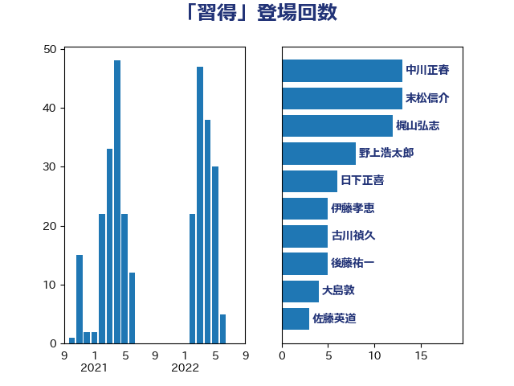

単語「習得」

| 中川正春 | 立憲民主党 | 13 回 |
| 末松信介 | 自由民主党 | 13 回 |
| 梶山弘志 | 自由民主党 | 12 回 |
| 野上浩太郎 | 自由民主党 | 8 回 |
| 日下正喜 | 公明党 | 6 回 |
| 伊藤孝恵 | 国民民主党 | 5 回 |
| 古川禎久 | 自由民主党 | 5 回 |
| 後藤祐一 | 立憲民主党 | 5 回 |
| 大島敦 | 立憲民主党 | 4 回 |
| 佐藤英道 | 公明党 | 3 回 |
| 宮路拓馬 | 自由民主党 | 3 回 |
| 平井卓也 | 自由民主党 | 3 回 |
| 池畑浩太朗 | 日本維新の会 | 3 回 |
| 萩生田光一 | 自由民主党 | 3 回 |
| 鰐淵洋子 | 公明党 | 3 回 |
| 下野六太 | 公明党 | 2 回 |
| 宮口治子 | 立憲民主党 | 2 回 |
| 小沢雅仁 | 立憲民主党 | 2 回 |
| 岸真紀子 | 立憲民主党 | 2 回 |
| 斉藤鉄夫 | 公明党 | 2 回 |
| 横沢高徳 | 立憲民主党 | 2 回 |
| 武田良太 | 自由民主党 | 2 回 |
| 武部新 | 自由民主党 | 2 回 |
| 牧島かれん | 自由民主党 | 2 回 |
| 矢倉克夫 | 公明党 | 2 回 |
| 紙智子 | 日本共産党 | 2 回 |
| 羽田次郎 | 立憲民主党 | 2 回 |
| 金子恭之 | 自由民主党 | 2 回 |
| 高木かおり | 日本維新の会 | 2 回 |
| 高橋光男 | 公明党 | 2 回 |
| 高野光二郎 | 自由民主党 | 2 回 |
| 高階恵美子 | 自由民主党 | 2 回 |
| 上川陽子 | 自由民主党 | 1 回 |
| 上野通子 | 自由民主党 | 1 回 |
| 中西祐介 | 自由民主党 | 1 回 |
| 丹羽秀樹 | 自由民主党 | 1 回 |
| 井上信治 | 自由民主党 | 1 回 |
| 今井絵理子 | 自由民主党 | 1 回 |
| 伊藤岳 | 日本共産党 | 1 回 |
| 住吉寛紀 | 日本維新の会 | 1 回 |
| 勝俣孝明 | 自由民主党 | 1 回 |
| 勝目康 | 自由民主党 | 1 回 |
| 古屋範子 | 公明党 | 1 回 |
| 土田慎 | 自由民主党 | 1 回 |
| 塩崎彰久 | 自由民主党 | 1 回 |
| 宮内秀樹 | 自由民主党 | 1 回 |
| 寺田学 | 立憲民主党 | 1 回 |
| 山崎誠 | 立憲民主党 | 1 回 |
| 山田俊男 | 自由民主党 | 1 回 |
| 岸信夫 | 自由民主党 | 1 回 |
| 川田龍平 | 立憲民主党 | 1 回 |
| 庄子賢一 | 公明党 | 1 回 |
| 斎藤嘉隆 | 立憲民主党 | 1 回 |
| 早坂敦 | 日本維新の会 | 1 回 |
| 杉久武 | 公明党 | 1 回 |
| 杉尾秀哉 | 立憲民主党 | 1 回 |
| 梅村みずほ | 日本維新の会 | 1 回 |
| 池下卓 | 日本維新の会 | 1 回 |
| 河野太郎 | 自由民主党 | 1 回 |
| 浅田均 | 日本維新の会 | 1 回 |
| 田村憲久 | 自由民主党 | 1 回 |
| 石井啓一 | 公明党 | 1 回 |
| 秋野公造 | 公明党 | 1 回 |
| 稲富修二 | 立憲民主党 | 1 回 |
| 竹谷とし子 | 公明党 | 1 回 |
| 笠井亮 | 日本共産党 | 1 回 |
| 自見はなこ | 自由民主党 | 1 回 |
| 菅義偉 | 自由民主党 | 1 回 |
| 葉梨康弘 | 自由民主党 | 1 回 |
| 藤岡隆雄 | 立憲民主党 | 1 回 |
| 西岡秀子 | 国民民主党 | 1 回 |
| 西銘恒三郎 | 自由民主党 | 1 回 |
| 赤池誠章 | 自由民主党 | 1 回 |
| 赤羽一嘉 | 公明党 | 1 回 |
| 里見隆治 | 公明党 | 1 回 |
| 野田聖子 | 自由民主党 | 1 回 |
| 鈴木俊一 | 自由民主党 | 1 回 |
| 鈴木義弘 | 国民民主党 | 1 回 |
| 青木愛 | 立憲民主党 | 1 回 |
| 高良鉄美 | 無所属 | 1 回 |
| 鳩山二郎 | 自由民主党 | 1 回 |